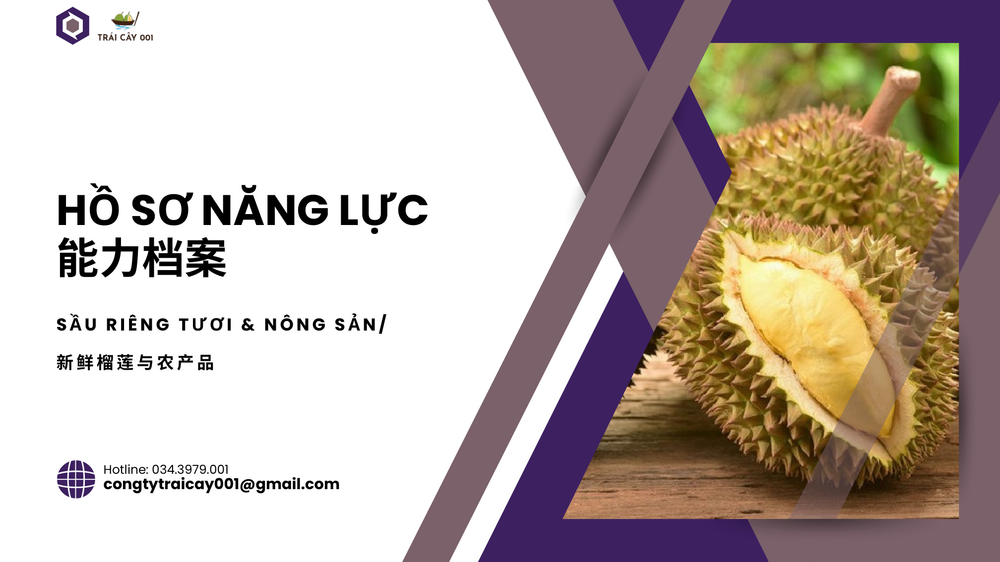
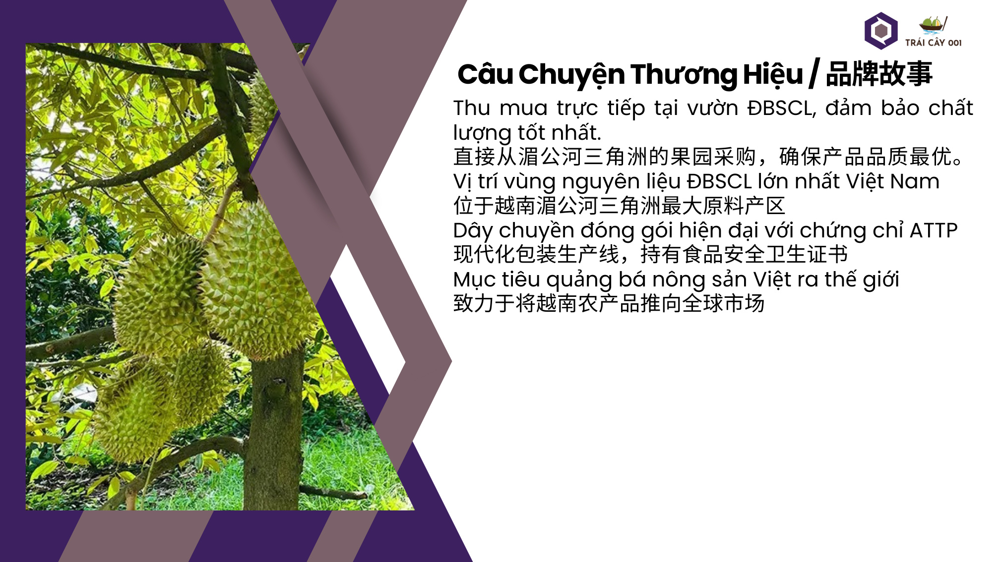
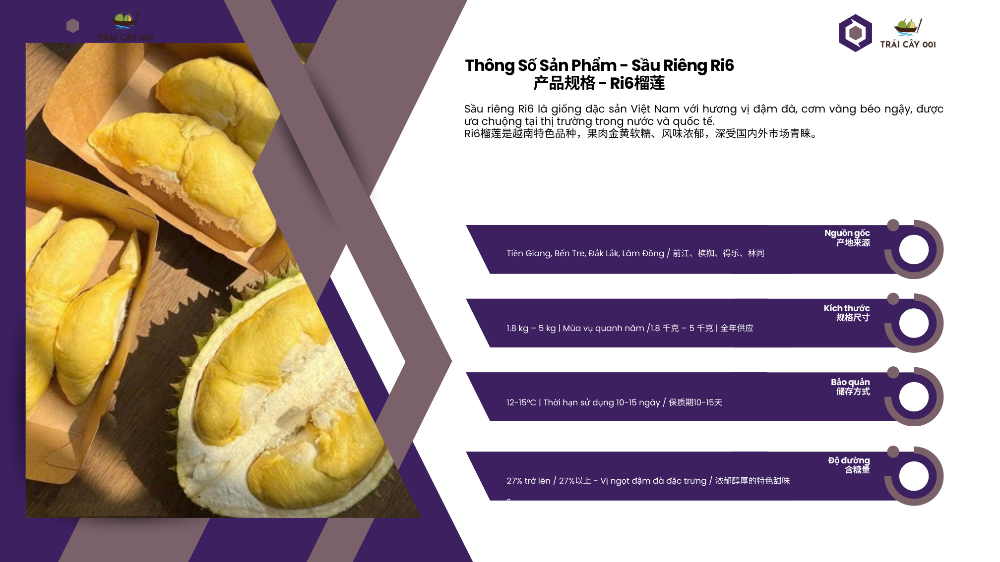
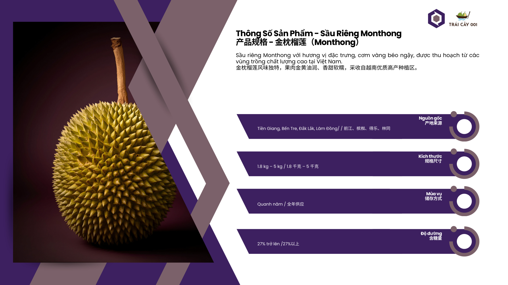
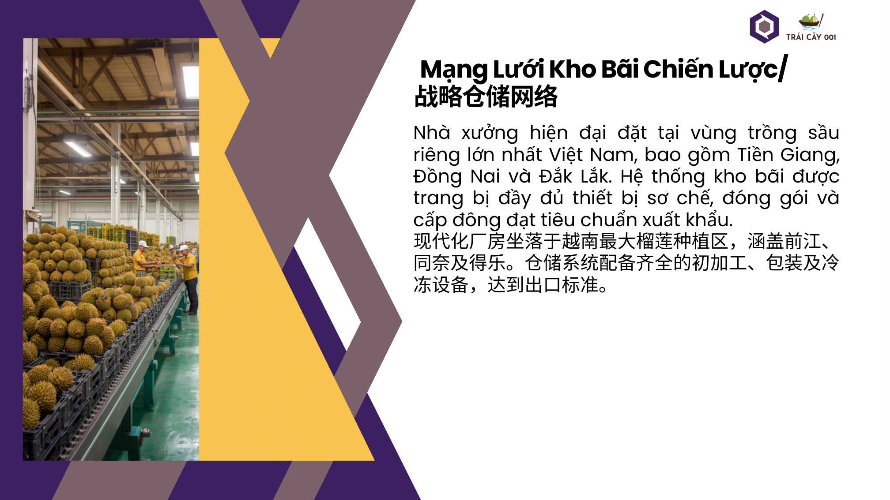
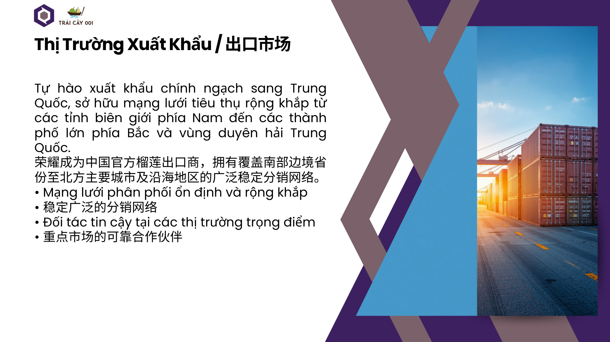
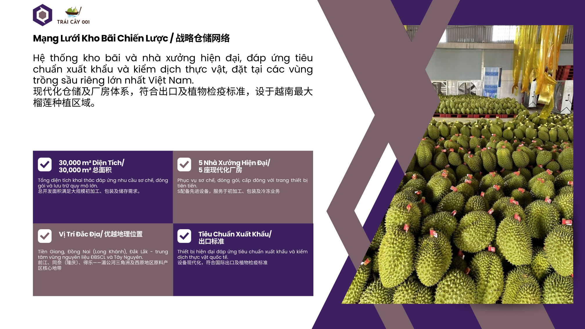
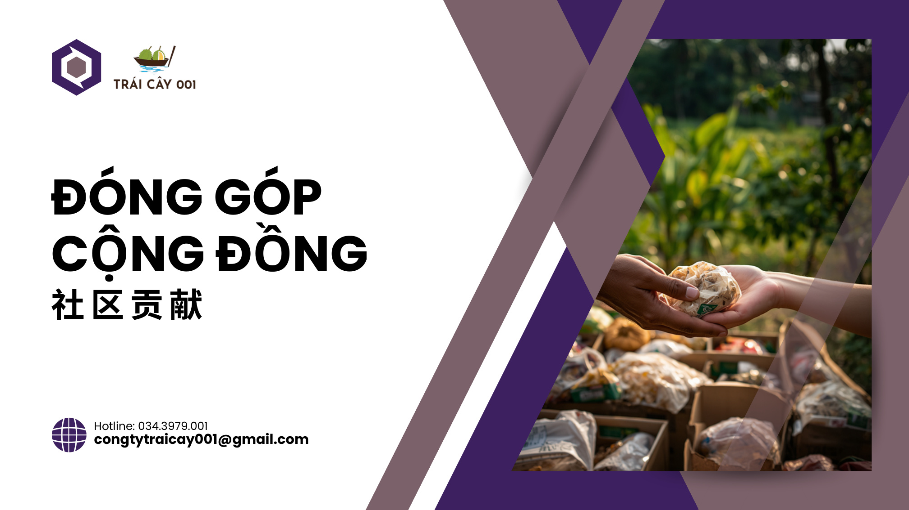
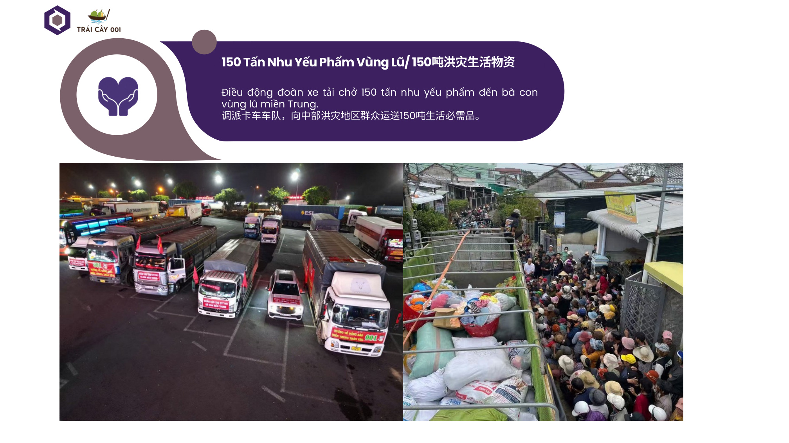
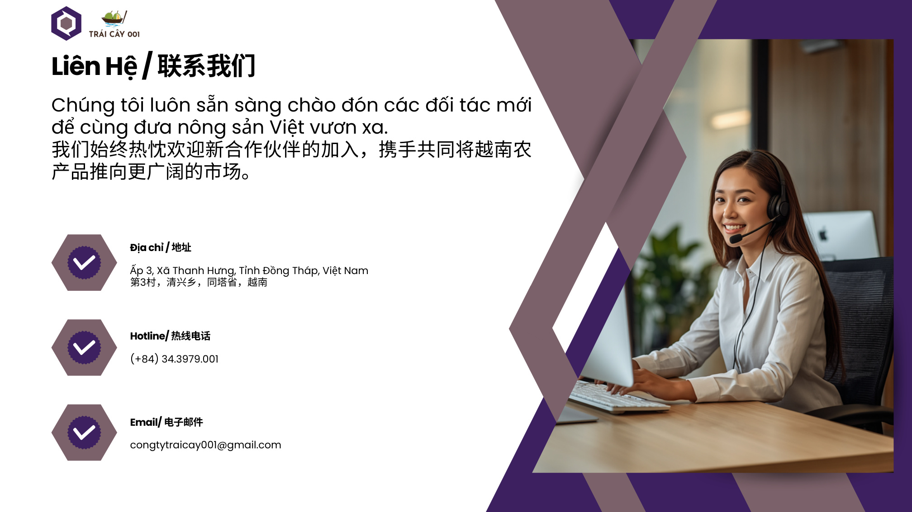

Sầu riêng tươi & nông sản xuất khẩu
Nâng cao giá trị nông sản Việt
Công ty TNHH Trái Cây 001 cung cấp nông sản sạch, rõ nguồn gốc, đặc biệt là sầu riêng tươi Ri6 và Monthong cho thị trường nội địa và xuất khẩu chính ngạch.
ATTP
Truy xuất nguồn gốc
Xuất khẩu chính ngạch

0
Kho bãi & nhà xưởng

Chuỗi cung ứng
Từ vườn trồng đến đóng gói, lưu trữ và xuất khẩu.
Giới thiệu công ty
Đổi mới công nghệ, nâng cao chất lượng sản xuất
Trái Cây 001 thu mua trực tiếp tại các vùng nguyên liệu lớn ở Đồng bằng sông Cửu Long và Tây Nguyên. Chúng tôi kiểm soát chất lượng, số lượng và nguồn gốc để đáp ứng yêu cầu của đối tác trong nước và quốc tế.
Thu mua trực tiếp tại vườn
Dây chuyền đóng gói hiện đại
Đảm bảo truy xuất nguồn gốc
Phục vụ thị trường xuất khẩu
Giá trị cốt lõi
Chất lượng tạo ra giá trị
Uy tín & chất lượng
Sản xuất cẩn trọng, có trách nhiệm và giữ tiêu chuẩn ổn định trong từng lô hàng.
Hợp tác & sẻ chia
Gắn kết với khách hàng, đối tác và nông dân trên nền tảng minh bạch, tin cậy.
Hoàn thiện & phát triển
Liên tục lắng nghe, đổi mới quy trình và nâng cao năng lực vận hành.
Nông sản bền vững
Kiến tạo chuỗi giá trị từ vườn đến bàn ăn, đưa giá trị Việt Nam ra thế giới.
Sản phẩm
Sản phẩm chủ lực

Sản phẩm sầu riêng
Sầu riêng Ri6 tươi
1.8 kg - 5 kg, độ đường từ 27%, mùa vụ quanh năm.

Sản phẩm sầu riêng
Sầu riêng Monthong
Cơm vàng béo ngậy, nguồn gốc từ vùng trồng chất lượng cao.

Dịch vụ nông sản
Sơ chế - đóng gói
Hệ thống nhà xưởng đáp ứng nhu cầu sơ chế và đóng gói quy mô lớn.

Xuất khẩu
Phân phối chính ngạch
Mạng lưới đối tác nhập khẩu, siêu thị và chợ đầu mối tại Trung Quốc.

Nhà máy & kho bãi
Sản phẩm đạt tiêu chuẩn xuất khẩu
Hệ thống kho bãi và nhà xưởng đặt tại Tiền Giang, Đồng Nai Long Khánh và Đắk Lắk, phục vụ sơ chế, đóng gói, cấp đông và lưu trữ với trang thiết bị hiện đại.
Quy trình vận hành
Từ vùng trồng đến thị trường xuất khẩu
Thu mua tại vườn
Lựa chọn sầu riêng từ vùng nguyên liệu đạt yêu cầu chất lượng.
Sơ chế & phân loại
Kiểm tra kích thước, độ chín, ngoại quan và nguồn gốc từng lô.
Đóng gói
Đóng gói theo tiêu chuẩn an toàn thực phẩm và yêu cầu đối tác.
Xuất khẩu
Phân phối chính ngạch đến các thị trường và hệ thống khách hàng.
Hợp tác & phân phối
Thị trường xuất khẩu rộng khắp
Tập đoàn nhập khẩu
Các doanh nghiệp nông sản lớn tại Trung Quốc với năng lực tiêu thụ mạnh.
Chuỗi siêu thị bán lẻ
Đưa sản phẩm sầu riêng Việt Nam đến người tiêu dùng cuối cùng.
Thương nhân chợ đầu mối
Kết nối nhanh với các thị trường truyền thống và điểm phân phối lớn.
Tin tức & hoạt động
Dấu ấn phát triển

Trách nhiệm xã hội
Đồng hành cùng cộng đồng trong những thời điểm khó khăn
Trái Cây 001 xem trách nhiệm xã hội là một phần trong phát triển bền vững.

Hoạt động cộng đồng
150 tấn nhu yếu phẩm hỗ trợ bà con vùng lũ miền Trung
Điều động đoàn xe tải vận chuyển nhu yếu phẩm đến các khu vực cần hỗ trợ.

Đối tác
Sẵn sàng chào đón đối tác mới trong chuỗi nông sản
Cùng đưa nông sản Việt Nam tiến xa hơn tại các thị trường trọng điểm.
Nhận tư vấn
Cần nguồn sầu riêng tươi ổn định?
Liên hệ Trái Cây 001 để trao đổi nhu cầu thu mua, đóng gói và xuất khẩu.